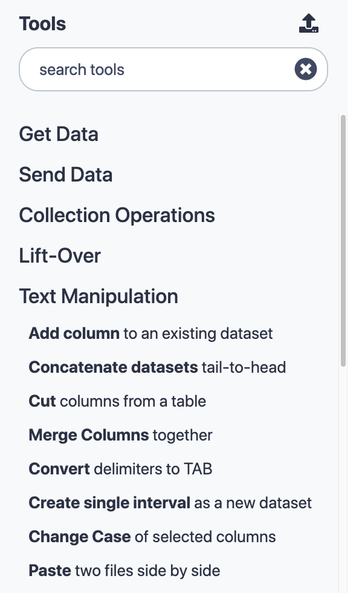
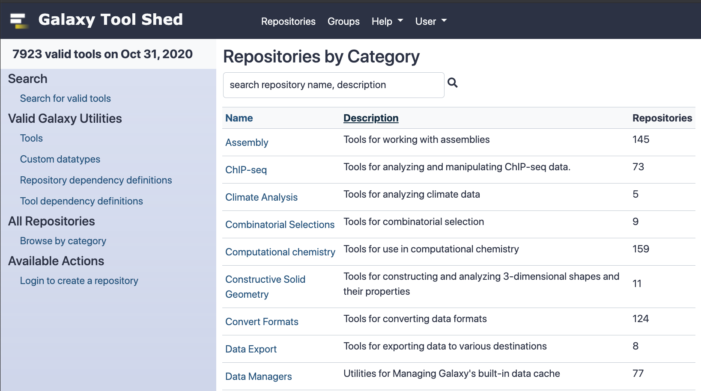

Galaxy Tool Management with Ephemeris
Contributors
Questions
How are tools configured on a Galaxy instance?
What is the Galaxy Tool Shed?
How are Galaxy tools installed?
What is ephemeris and how can it be used to manage tools on a Galaxy instance?
Galaxy tools
- A Galaxy
toolorwrapperis an XML file describing how some software program works- allows Galaxy to display the tool interface and execute the software
- describes all software requirements, tests, inputs and outputs, help text, citations
- The underlying software packages needed to execute the tool command are called
requirementsordependencies - A toolshed
repositoryis a code archive in Tool Shed containing Galaxy tool(s)
Speaker Notes
A Galaxy tool or wrapper is an XML file describing how some software program works
The wrapper xml file contains definitions of the tool input form and instructions to translate form entries into a command to execute the tool
Underlying software packages could be packages like samtools or biopython.
A repository in the Galaxy Tool Shed is a versioned code archive containing one or more Galaxy tools
The tool panel
.left-column50[  ]
.right-column50[
-
Panel on left-hand side of Galaxy UI
-
Contains Galaxy tools organised into sections
-
Some tools are distributed together with Galaxy (“built-in tools”)
-
Tools can be installed from the Galaxy Tool Shed.
-
Customisable: admins can choose which tools are installed and how the tool panel is organised ]
Speaker Notes
The tool panel on the left hand side of a Galaxy site contains all of the tools available on that Galaxy instance, arranged into sections.
In this picture the Text Manipulation section has been expanded.
There are tools that come with the galaxy code such as the uploader, but the vast majority of tools on a public galaxy have been installed from the toolshed.
The contents and layout of the tool panel are customisable.
class: left
Tool configuration files
tool_conf.xml (default tool_conf.xml.sample)
- Contains built-in galaxy tools (tools in galaxy codebase)
- Can contain manually added tools
shed_tool_conf.xml
- Contains tools downloaded from the tool shed
- Managed by galaxy
integrated_tool_panel.xml
- Contains all tools from
tool_conf.xmlandshed_tool_conf.xml - Automatically generated by Galaxy
- Can be edited to change the layout of the tool panel
Speaker Notes
The contents of the tool panel are defined by three configuration files
The tool_conf file contains galaxy built in tools and manually added tools
The shed_tool_conf file is managed by galaxy and contains all tools installed from the tool shed
The integrated_tool_panel file contains all of the tools from tool_conf and shed_tool_conf and can be edited to change the layout of the tool panel
class: left
tool_conf.xml
<toolbox monitor="true">
<section id="getext" name="Get Data">
<tool file="data_source/upload.xml"/>
<tool file="data_source/ucsc_tablebrowser.xml"/>
<tool_dir dir="local-tools/" />
...
shed_tool_conf.xml
<toolbox tool_path="../shed_tools"> <!-- path to installed repositories -->
<section id="assembly" name="Assembly" version="">
<tool file="toolshed.g2.bx.psu.edu/repos/iuc/shovill/196a599ec43d/shovill/shovill.xml"
guid="toolshed.g2.bx.psu.edu/repos/iuc/shovill/shovill/0.8.0">
<tool_shed>toolshed.g2.bx.psu.edu</tool_shed>
<repository_name>shovill</repository_name>
<repository_owner>iuc</repository_owner>
<installed_changeset_revision>196a599ec43d</installed_changeset_revision>
<id>toolshed.g2.bx.psu.edu/repos/iuc/shovill/shovill/0.8.0</id>
<version>0.8.0</version>
</tool>
...
Speaker Notes
The tool_conf file contains paths to local tool wrapper XML files.
Each tool element is within a section, telling galaxy where to put the tool in the panel.
The shed_tool_conf file also contains paths to tool wrapper XML files where they are installed (a complex directory structure)
It contains some metadata for each tool.
Tool Shed
- Galaxy “App Store”
- It is a free service that hosts repositories containing Galaxy tools.
- The Tool Shed is a hosting (not a development) platform.
- Each repository should link to its development repository.
- https://toolshed.g2.bx.psu.edu/
Speaker Notes
The tool shed is Galaxy’s app store.
It’s a free service hosts repositories containing Galaxy tools and can be found at this URL.
It’s not a development platform: tools are usually maintained in open source github repos and uploaded to the toolshed.
#####https://toolshed.g2.bx.psu.edu/ 
Speaker Notes
The Galaxy tool shed has thousands of tools (almost 8000 as of October 2020)
You can go to this site to search for toolshed tools by category, or search for them by name
class: left
Ways to add tools
You can add tools to Galaxy either
- Manually - useful for tool development.
- From the Tool Shed
- Through the admin UI in Galaxy
- Using ephemeris (recommended)
Speaker Notes
Tools can be added manually or from the toolshed.
Toolshed tools can be installed through the admin UI but using ephemeris is recommended.
How to add tools manually
- To add a local tool by hand:
- Add an entry to tool_conf.xml pointing to the local tool’s xml file
- if
tool_conf.xmldoes not exist it can be copied fromtool_conf.xml.sample
- To add local tools with the galaxyproject.galaxy Ansible role:
- Set
galaxy_local_toolsto the local tool paths - Run the playbook
- Set
- Tool dependencies need to be installed separately, unless
conda_auto_install: trueis set ingalaxy.yml(not recommended for production)
Speaker Notes
Tools can be added manually to the tool_conf.xml file.
If this doesn’t exist it can be copied from the default file tool_conf.xml.sample.
There is also a variable in the galaxy ansible role for adding these.
The dependecies need to be installed separately.
How to install Tool Shed tools through the UI
- From the Galaxy admin UI, select “Tool Management > Install and Uninstall”
- Find the repository with the tool(s) you want to install
- Install the tool repository into Galaxy
Speaker Notes
An administrator can look up any tool from the main toolshed in the admin panel and click the ‘Install’ button.
Advantages of using the Tool Shed
- Installing from the Tool Shed takes care of
- dependencies
- reference data tables
- configuration files
- Multiple versions (“installable revisions”) of a repository can be installed to preserve reproducibility
Speaker Notes
Installing from the tool shed will install tool dependencies.
This is typically a conda virtual environment containing every package that the tool requires.
A toolshed tool might have multiple revisions.
This is important for reproducibility.
If you use a tool in an analysis on a public galaxy server it will be there forever.
If you need to rerun your analysis in a year’s time, the tool you have used will still be there even if a is a newer revision of the tool has been installed.
Which Tool Shed?
- The Main Tool Shed ( https://toolshed.g2.bx.psu.edu ) serves all Galaxies worldwide.
- Everybody can create a repository.
- Repositories are public, including their whole history.
- The Test Tool Shed ( https://testtoolshed.g2.bx.psu.edu ) can be used for repositories not yet production-ready.
- Local sheds can be run e.g. for private or custom-licensed tools.
- The list of available Tool Sheds for a Galaxy instance is defined in
tool_sheds_conf.xml:
.reduce90[
<?xml version="1.0"?>
<tool_sheds>
<tool_shed name="Galaxy Main Tool Shed" url="https://toolshed.g2.bx.psu.edu/"/>
<!-- Test Tool Shed should be used only for testing purposes.
<tool_shed name="Galaxy Test Tool Shed" url="https://testtoolshed.g2.bx.psu.edu/"/>
-->
</tool_sheds>
]
Speaker Notes
Repositories in the test tool shed are also public.
The toolshed is a web app backed by a database and anybody can run one, but we discourage running local tool shed.
By default, Galaxy only accepts tools from the main toolshed but also contains a commented out entry for the test toolshed.
What happens when installing a repo from the Tool Shed
- The repository is downloaded
- If needed, the tool’s dependencies are installed
- If needed, reference data tables are installed
- An entry for each tool is created in the Galaxy database
- The tools are added to
shed_tool_conf.xml
Speaker Notes
The repository is downloaded
The tool’s dependencies are installed if needed (they may already be there)
If needed, reference data tables are installed
An entry for each tool is created in the Galaxy database (or the tool install database depending on the configuration of galaxy)
The tools are added to shed_tool_conf.xml
How to install with Ephemeris
- Find the repository you want to install.
- Run
shed-tools installwith the repository details
Speaker Notes
Find a repository to install from the tool shed and
install it with the ephemeris shed-tools command
Ephemeris
Small Python library for Galaxy Management
- Can install:
- Tools
- Reference data
- Workflows
- Data libraries
- Can also test tools
$ pip install ephemeris- https://github.com/galaxyproject/ephemeris
- https://ephemeris.readthedocs.io
Speaker Notes
Ephemeris is a Python library for Galaxy management.
It can be used to install tools, reference data, workflows and data libraries onto a Galaxy Instance.
It can also be used to run tool tests.
Ephemeris can be installed with pip.
Ephemeris manages tools through the Galaxy API.
There is no need to be using ephemeris commands from the server running Galaxy (though you can).
Get installed tool list for a Galaxy instance
get-tool-list [-g GALAXY] [-u USER] [-p PASSWORD] [-a API_KEY]
[-h] [-v]
-o OUTPUT
[--include_tool_panel_id]
[--skip_tool_panel_name]
[--skip_changeset_revision]
[--get_data_managers] # admin only
[--get_all_tools] # admin only
Speaker Notes
Ephemeris can be used to get a list of installed tools for any public galaxy instance
An API key is not required for this but some options are not available unless an admin API key is provided.
tools:
- name: 'column_maker'
owner: 'devteam'
tool_panel_section_label: 'Text Manipulation'
revisions:
- '464b9305180e' # 1.2.0
tool_shed_url: 'toolshed.g2.bx.psu.edu'
- name: 'bwa'
owner: 'devteam'
revisions:
- '051eba708f43' # 0.7.15.2
- '4d82cf59895e' # 0.7.16.2
tool_panel_section_label: 'Mapping'
tool_shed_url: 'toolshed.g2.bx.psu.edu'
- name: 'tabular_to_fasta'
owner: 'devteam'
revisions:
- '0b4e36026794' # v1.1.0
tool_panel_section_label: 'Convert Formats'
tool_shed_url: 'toolshed.g2.bx.psu.edu'
Speaker Notes
The output contains all of the information we would need to install tools on a different galaxy instance.
The revisions correspond to tool versions. There are comments to highlight this.
There are two different revisions of bwa corresponding to two different versions.
Install/Update/Test tools
shed-tools install [-h] [-v] [-g GALAXY] [-u USER] [-p PASSWORD] [-a API_KEY]
[--log_file LOG_FILE]
[-t TOOL_LIST_FILE]
[-y TOOL_YAML]
[--name NAME]
[--owner OWNER]
[--revisions [REVISIONS [REVISIONS ...]]]
[--toolshed TOOL_SHED_URL]
[--install_tool_dependencies]
[--skip_install_resolver_dependencies]
[--skip_install_repository_dependencies]
[--test]
[--test_existing]
[--test_json TEST_JSON]
[--test_user_api_key TEST_USER]
[--test_user TEST_USER]
[--section TOOL_PANEL_SECTION_ID]
[--section_label TOOL_PANEL_SECTION_LABEL]
[--latest]
- Ansible role: https://github.com/galaxyproject/ansible-galaxy-tools
- Sample playbook: https://github.com/afgane/galaxy-tools-playbook
Speaker Notes
A galaxy administrator can install tools by providing their administrator API key.
They can specify the name, owner and section label or provide a yaml list of tools (TOOL_LIST_FILE)
Example: Installing circos
.left[ (1)
shed-tools install -g <galaxy url> -a <api key> \
--name circos --owner iuc --section_label 'Graph/Display Data'
(2)
shed-tools install -g <galaxy url> -a <api key> -t tools.yml
tools.yml
tools:
- name: circos
owner: iuc
tool_panel_section_label: Graph/Display Data
]
Speaker Notes
shed-tools can be used to install a tool from command line arguments or from a yaml file containing one or more tools.
These two examples are equivalent to each other.
The advantage of the second approach is that many tools be listed in tools.yml to be installed at the same time
The argument ‘revisions’ can also be provided to install a specific revision or more than one revision of the repository.
In the absence of a ‘revisions’ argument, shed-tools will install the latest revision of the tool.
Test tools
shed-tools test [-h] [-v] [--log_file LOG_FILE] [-g GALAXY] [-u USER]
[-p PASSWORD] [-a API_KEY] [-t TOOL_LIST_FILE]
[-y TOOL_YAML] [--name NAME] [--owner OWNER]
[--revisions [REVISIONS [REVISIONS ...]]]
[--toolshed TOOL_SHED_URL] [--test_json TEST_JSON]
[--test_user_api_key TEST_USER_API_KEY]
[--test_user TEST_USER]
[--parallel_tests PARALLEL_TESTS]
Speaker Notes
A good tool comes with tests: instructions within the wrapper to run the tool with test input and see whether the tool produces the expected output.
You need to be an an administrator to install tools but any galaxy user with an API key can run tool tests.
Tool test output
- List of tests that have passed and tests that have failed
tool_test_output.jsonfile with details of all of the test jobs including their standard outputs- planemo (https://planemo.readthedocs.io/en/latest/)
can be used to generate test reports from
tool_test_output.json(pip install planemo)
Speaker Notes
Running tool tests with ephemeris will yield
- a list of tool tests that have passed and failed and
- a more detailed file of data from the test jobs that is useful for debugging.
The python library planemo (also part of the galaxy project) can be used generate a user-friendly report from the json data.
List tools from a Galaxy workflow
workflow-to-tools
-w WORKFLOW_FILES [WORKFLOW_FILES ...]
A space separated list of galaxy workflow description
files in json format
-o OUTPUT_FILE
The output file with a yml tool list
-l PANEL_LABEL
The name of the panel where the tools will show up in
Galaxy.If not specified: "Tools from workflows"
Speaker Notes
From a downloaded workflow file, workflow-to-tools generates a yaml list of all toolshed tools required to run that workflow
Setup data libraries
setup-data-libraries [-h] [-v] [-g GALAXY] [-u USER] [-p PASSWORD] [-a API_KEY]
-i INFILE
[--training]
[--legacy]
Speaker Notes
An administrator can use the ephemeris command setup-data-libraries to upload shared data files
destination:
type: library
name: "Cool Training Library"
description: "A longer description."
synopsis: "Optional - does anyone ever set this?"
items:
- name: "Test Folder 1"
description: "Description of what is in Test Folder 1"
items:
- url: https://example.org/cliques-high-representatives.fa
src: url
ext: fasta
info: "A cool longer description."
dbkey: "hg19"
- name: "Test data segmentation-fold"
items:
- url: https://example.org/tests/test-data/workflow-test_cd-box_kturns.xml
name: workflow-test_cd-box_kturns.xml
info: Downloaded from https://example.org/
src: url
ext: xml
Speaker Notes
A yaml file describing two folders with one file each to upload to galaxy’s shared data.
Contains instructions to download the file contents from public URLs
Wait for Galaxy
$ galaxy-wait -g http://localhost:8080 -v
[00] Galaxy not up yet... HTTPConnectionPool(host='localhost', port=8080):
Max retries exceeded with url: /api/version (Caused
[01] Galaxy not up yet... HTTPConnectionPool(host='localhost', port=8080):
Max retries exceeded with url: /api/version (Caused
[02] Galaxy not up yet... HTTPConnectionPool(host='localhost', port=8080):
Max retries exceeded with url: /api/version (Caused
[03] Galaxy not up yet... HTTPConnectionPool(host='localhost', port=8080):
Max retries exceeded with url: /api/version (Caused
[04] Galaxy not up yet... HTTPConnectionPool(host='localhost', port=8080):
Max retries exceeded with url: /api/version (Caused
[05] Galaxy not up yet... HTTPConnectionPool(host='localhost', port=8080):
Max retries exceeded with url: /api/version (Caused
Galaxy Version: 17.05
Speaker Notes
galaxy-wait sends an API request to a galaxy server to check whether it is running and able to accept the request.
If the server is ready it will return straight away.
If not it will keep sending requests.
This is useful if you want to run any of the other commands such as shed-tools install and you don’t know whether Galaxy will be ready.
More on Tool Management
- Repository structure
- Reference data
- Dependencies
class: normal
Simple tool shed repository (remove_beginning)
.
├── remove_beginning.pl # optional accompanying script
├── remove_beginning.xml # tool wrapper
├── .shed.yml # metadata file
└── test-data # subdirectory for test data
├── 1.bed # test input file
└── eq-removebeginning.dat # test output file
Speaker Notes
A tool shed repository containing one tool: remove_beginning.
The repository contains
- a perl script that is executed from code in the wrapper
- test input and output for the tool’s tests
- a metadata file for the toolshed.
class: normal
.shed.yml file
Contains repository’s metadata.
categories:
- Text Manipulation
description: Remove lines from the beginning of a file.
long_description: |
This tool removes the specified number of lines from the beginning
of the input dataset.
<span id="remove_beginning"><i class="fas fa-link" aria-hidden="true"></i> remove_beginning</span>
owner: devteam
remote_repository_url: https://github.com/galaxyproject/tools-devteam/tree/master/tools/remove_beginning
type: unrestricted
Speaker Notes
The tool name and owner are set in the metadata file.
The file also contains the development url for the tool.
The development URL is displayed in the toolshed as a link to the tool’s files within its development environment.
This is the github repo you would go to raise an issue the the tool or make a pull request to improve the tool.
class: normal
Complex tool shed repository (varscan)
.
├── macros.xml # defines tool macros
├── .shed.yml
├── test-data
│ ├── control_chrM.bam
│ ├── fasta_indexes.loc # Loc file for tests
...
│ └── varscan_mpileup_result1.vcf
├── tool-data
│ └── fasta_indexes.loc.sample # Sample loc file
├── tool_data_table_conf.xml.sample # Sample data table
├── tool_data_table_conf.xml.test # Data table for tests
├── varscan_copynumber.xml # wrapper for tool #1
├── varscan_mpileup.xml # wrapper for tool #2
├── varscan.py
└── varscan_somatic.xml # wrapper for tool #3
Speaker Notes
This is a more complex toolshed repository containing three tool wrappers related to the same software.
Installing this repository will add three tools to the tool panel.
Data tables and loc files
- Several tools need to access reference data, e.g. genome sequences or indexes for aligner
- A loc file is a tab-separated file containing metadata and paths for a set of reference data
- A data table describes the columns of a loc file used by a tool
- Installing CVMFS provides access to a large amount of reference data. There are also data manager tools for installing reference data.
- You can read more about this in the Reference Genomes in Galaxy slides
- See also: Reference Data with CVMFS
Speaker Notes
Sometimes tools will need reference data such as genomes.
Loc files and data tables are used to link tools with reference files.
If CVMFS is installed a lot of your reference data needs will be taken care of.
There are data manager tools in the toolshed for installing reference data for tools.
These can be run from the admin panel or using ephemeri
Suite repositories
- Suites can be used to split up a set of tools into multiple repositories
- A suite is a single repository that ‘depends’ on many others
- When you install the suite, all ‘dependency repositories’ will be installed too
- With a tweak to
.shed.yml, Planemo can upload a directory of tools to the TS as a suite of separate tools - Examples: suite_samtools, suite_hicexplorer
Speaker Notes
There are also repositories in the Tool Shed that are suite repositories.
Suite repositories can be used to install multiple tool shed repositories at once.
For example: there are many tools associated with samtools owned by the IUC, such as samtools_view or samtools_mpileup.
Installing samtools_suite will result in all of these samtools repositories being installed.
Resolving Galaxy Tool Dependencies
- The recommended method for resolving tool dependencies is with containers: Apptainer/Singularity or Docker
- It is also possible to use Conda to resolve dependencies.
- You can read more about this in the Tool Dependencies and Containers slides
Speaker Notes
The preferred method for resolving tool dependencies is through containers. Apptainer particularly works well in the context of cluster jobs. It is also possible to use non-container dependency resolution methods. There is further reading available on this topic.
Key Points
- The Galaxy Tool Shed contains thousands of tools that can be installed on a Galaxy instance
- Galaxy administrators can choose which tools are installed and how they are arranged
- Ephemeris can be used to manage tools on a Galaxy instance
- Tool installation with ephemeris is best practice and allows for the automation of tool management tasks
Thank you!
This material is the result of a collaborative work. Thanks to the Galaxy Training Network and all the contributors! Tutorial Content is licensed under
Creative Commons Attribution 4.0 International License.
Tutorial Content is licensed under
Creative Commons Attribution 4.0 International License.